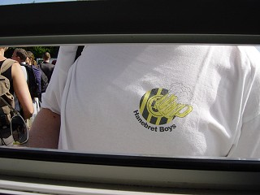

|
Zoektocht naar Rodafans op PinkPop |
De Pinkpop-crew verzamelt voor het PLS. De
opdracht luidt: Zoek Rodafans op Pinkpop.
De poorten gaan open. Het speurwerk begint.
Jaaa, daar is de eerste Rodafan. Het is Tweety.
Of nee, het is een ander kuiken....
De zoektocht naar Rodafans raakt ernstig
verneveld door dit steunpunt.
Uiterst rechts een Rodameëdsje?
Waar zouden ze toch allemaal zitten?!
Daar komen vast de Cercle Brugge fans.
In het midden met nummer 10 staat ene Totti.
XXX
Er waren veel Oranje-klanten.
FC Twente was ook vertegenwoordigd op PP
Nog steeds geen Rodafans gevonden!
Mexico Copa Mundial-shirt.
Jaaaaa, we hebben er een gevonden!
Het is Rosj (va Volsj).
Brui-member op camping A.
En alweer een Rodafan, inclusief
been-tattoo van RJC.
Daar hebben we Goldy (Z16).
Kim (Z16), gelegen op het mooiste kussen van
het gehele PinkPopterrein.
Friesche vlag.
Alweer een Rodafan.
2 Brunssummers na een partijtje pratsj-duuken.

De pratsjduukers zetten K. en Loes ook op de
foto.

Wie verschijnt hier aan kassa 11?
Het is een Hanebretboy!
HBB Ray duikt ook op. Forza Roda!
Vier Rodafans in front of Junkie XL:
Tolk, Smurf, Ray, Lange
Q is vrolijk, Forza Roda, Forza Pinkpop, Forza
1/4 hanen!
Dit is geen Rodafan.
Dit ook niet.
Maar op de valreep ontdekken we Rodafanatic
D. Dormans.
En natuurlijk Susan!
Elvis leaves de building, so do I.